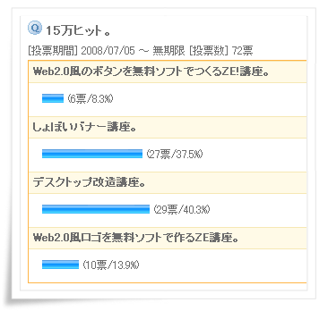
まぁこんな感じで、テンプレ屋なのになぜかデスクトップ改造講座や、バナー講座など・・・。
まぁお遊びですね（ぇ

注意！！
システムの内部のファイルを変更したりますので、自己責任でお願いします。
また、起動できなくなる場合もありますのでそこのところを十分に考えてください。
管理人の環境は、WindowsXP
Sp3 Pro( Mem : 1GB , CPU : Celeron 370
1.5G)です。
わからない場合は、スタート＞マイコンピューター＞右クリック＞プロパティで確認をしてください。
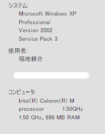
まずは、スタート＞すべてのプログラム＞アクセサリ＞システムツール＞システムの復元を起動します。
そうしたら、復元ポイントの作成で名前をつけます。
Xp Sp3 の場合はこちら
Xp Sp2 , Sp1 の場合はこちら
Sp3の場合
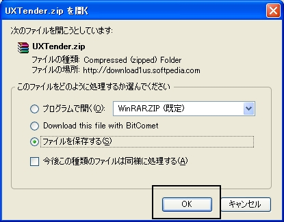
保存。
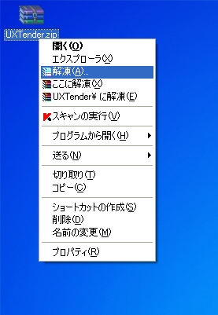
解凍ソフトで解凍。
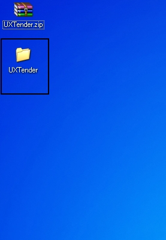
解凍できたファイルを開きます。

UXTender.exe
(UxTender)をダブルクリック。
起動してきたら、Patchをクリック。
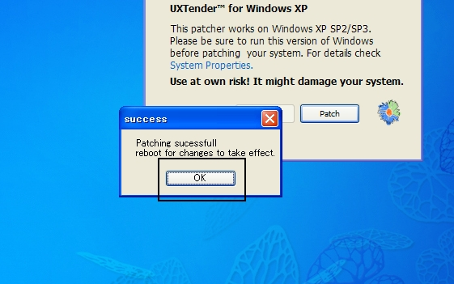
OKをクリックして再起動してください。
Sp2の場合。

黒部分（Universal~)をクリックする。保存。
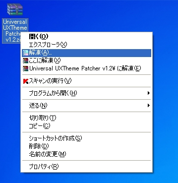
解凍。

解凍できたら、Universal
UXThemをダブルクリック。Patchをクリック。
再起動してください。
再起動したら・・・・。

再起動しても何も変わらないと思いますが、そのまま。
RESOURCEさまに行って左のメニューでVisualStyleをクリックします。
で好きなテーマの画像をクリックして左のDownloadをクリックします。
かいとうしたら、
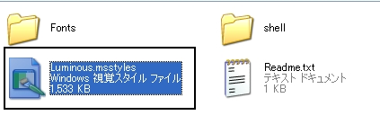
でてきた＊.msstyleをダブルクリック。
そうしたら画面のプロパティができます。

でOKを押します。

と初期テーマから変わりました。

でわ。WindowsXP標準のマウスカーソルから変えてみましょう。
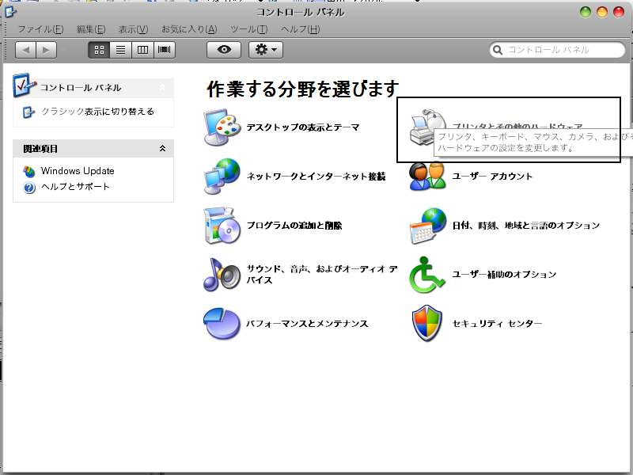
スタート＞コントロールパネル＞マウス（ｒｙ
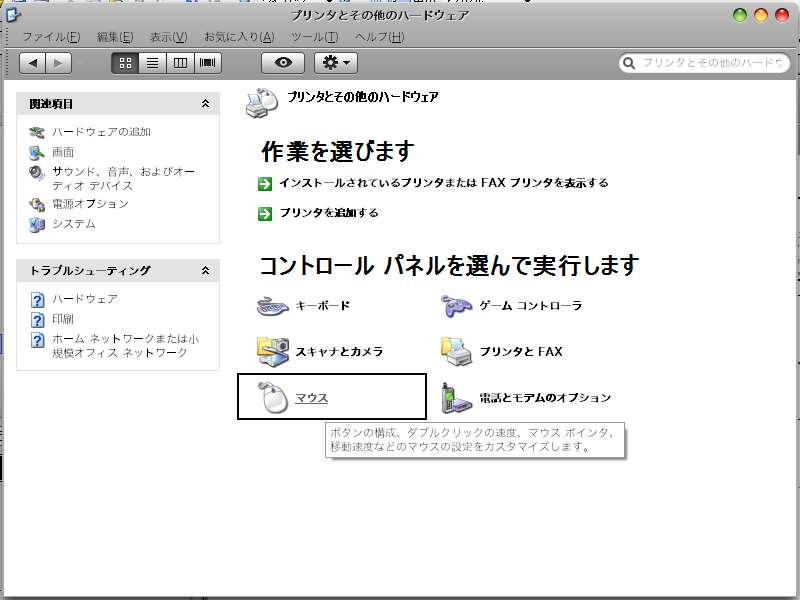
マウス
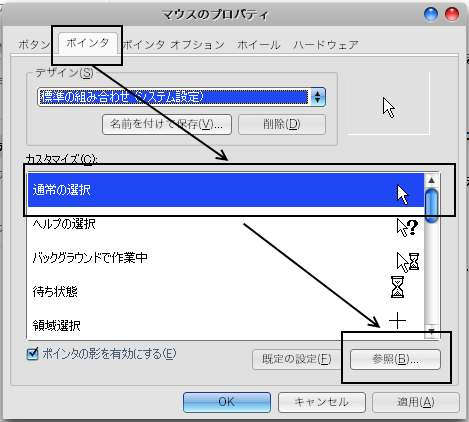
タブでポインタを。
そして変えたいポインタを選択参照。
カーソルはGoogleで調べてみてください。
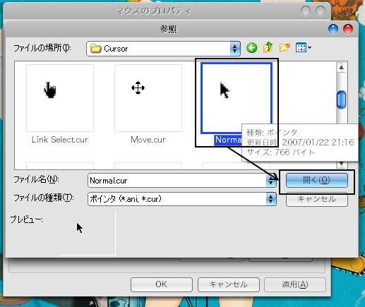
参照＞カーソルファイルのところへいって選択。
開く。
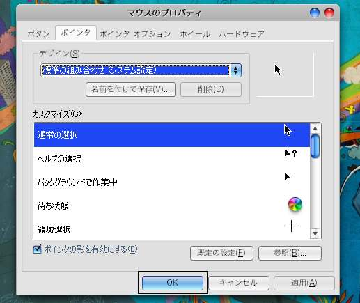
OK。
で変わったはずです。